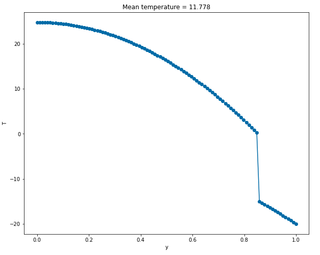
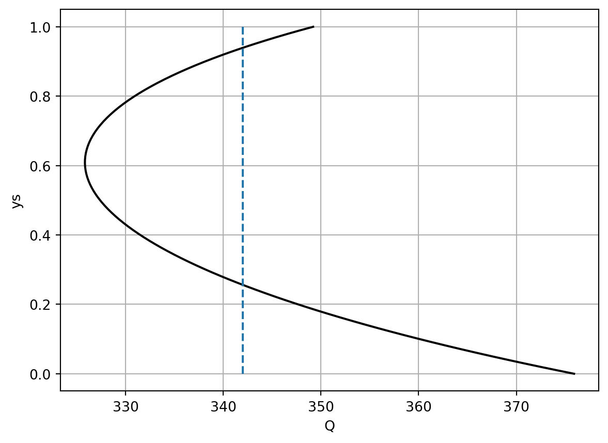

We continue our investigation of the latitude-dependent model of Chapter 17.
19.1 Placement of the ice line
Using Newton’s method, we previously solved for a complete solution by starting off with a ‘lucky’ initial guess. For example, starting with a linear temperature distribution set to \(T(0) = 20\) and \(T(1) = -20\) we were able to converge to the profile shown below.

Figure 19.1: Temperature distribution
It is seen in the image that the ice line lies roughly at \(y_s = 0.85\). Actually, this turns out to be wrong because the numerical method we applied previously in Chapter 17 was flawed in a very subtle way. We will eventually come to this realisation after the material from this chapter.
Interactive matplotlib plots
Note that it is now possible to gain interactivity with your matplotlib plots by inserting the magic command matplotlib ipympl at the top of your notebook files. The kernel will need to be restarted for this to take effect.
We want to know whether other solutions exist with ice lines at \(y_s \in [0, 1]\).
19.2 Development of an equation for the ice line
It turns out to be possible to develop an equation for the ice line.
First, note from your problem set Chapter 31 you find that it is possible to solve for the steady-state mean temperature, which we write as \(\bar{T}^*\). In your problem set, you will develop the following equation (given by (Equation 31.4)): \[
\bar{T}^* = \frac{Q(1 - \bar{a}) - A}{B}.
\tag{19.1}\] The quantity \(\bar{a}\) is given by integrating the albedo as follows: \[
\bar{a} = \int_0^1 s(y) a(y) \, \mathrm{d}y = a_i + (a_w {\color{blue}-} a_i)y_s[1 - 0.241 (y_s^2 - 1)],
\] which is given by (Equation 31.3). You may check that the above formula has the right signs by considering either the complete ice case (ice line at the equator \(y_s = 0\)) or the complete water/land case (ice line at \(y_s = 1\)).
Now we return to the implicit equation for the temperature, which is given by (Equation 17.3) and repeated here: \[
T^*(y) = \Phi(T^*) = \frac{k\bar{T}^* + Qs(y)(1 {\color{red}-} a(y)) - A}{B + k}.
\] Substitute the mean temperature in, and this now yields \[
T^*(y) = \frac{Q}{B + k} \left[ s(y) [1 - a(y)] + \frac{k}{B}(1 - \bar{a})\right] - \frac{A}{B}.
\tag{19.2}\] This ice line is then found by setting \(T = T_C\) at \(y = y_s\) in the above formula. Notice, though, that since \(s(y)\) is a cubic function, then we would need to solve a cubic equation in general.
19.3 A word about the parameter space
Solutions to our latitude-dependent EBM can be symbolically written as follows: \[
T = T(t, y) = G(y; A, b, k, C, Q, a_i, a_w).
\] As you can see, even though it is a relatively simple equation in the sense it is only an ODE in time (and does not involve any spatial derivatives in \(y\)), is still complicated because the behaviour of the system can depend in a non-trivial way on all the parameters.
You can schematically think of the solution space as a being plotted in 8-dimensional space (or even higher, since the albedo \(a\) can be specified more generally). So for instance, bifurcation diagrams can then be plotted for some norm of the solution, say \(\bar{T}\) versus the seven other parameters.
There are other representations of the bifurcation diagram(s). For example, you might plot \(y_s\) vs \(Q\) or \(\bar{T}\) vs \(A\), and so forth.
19.4 A bifurcation diagram for \(Q\) vs \(y_s\)
Returning to the ice line, we are interested in keeping all other parameters fixed, and then attempting to understand how the ice line evolves as the solar constant \(Q\) is changed. For example, we might believe that as \(Q\) increases (and hence temperatures rise), the ice line will move towards the North Pole. And as \(Q\) decreases, the ice line moves towards the equator.
We return to (Equation 19.2) and consider inverting the formulation. For each given ice line location, \(y_s \in (0, 1)\), we solve for the \(Q\) value. This gives \[
Q = \frac{\left(T_C + \frac{A}{B}\right)(B + k)}{s(y_s)[1 - \frac{1}{2}(a_i + a_w)] + \frac{k}{B}(1 - \bar{a})}.
\] Above, we have used the fact that \(a(y_s) = \frac{1}{2}(a_i + a_w)\). This can now be plotted in Python, either in the notebook written during lectures, or via the code below.
import numpy as npimport matplotlib.pyplot as pltA =202# outgoing radiationB =1.9# outgoing radiationk =1.6*B # transport parameters =lambda y: 1-0.482*(3*y**2-1)/2# solar weightingaw =0.32# water albedoai =0.62# ice albedoTc =-10.0# critical temperature for ice formationQ0 =342.0# solar constant (1370 W/m^2 divided by 4)# Note version in lectures was a 1/2 factor off on the second grouping of terms; # now corrected to match Q6 of PS4abar =lambda ys: ai + (aw - ai)*ys*(1-0.241*(ys**2-1))Qfunc =lambda ys: (Tc + A/B)*(B+k)/(s(ys)*(1- (ai+aw)/2) + k/B*(1- abar(ys)))# Solve for the ice lineys = np.linspace(0, 1, 100);Qs = Qfunc(ys);plt.plot(Qs, ys, 'k')plt.plot([Q0, Q0], [0, 1], '--')plt.xlabel('Q');plt.ylabel('ys');plt.grid(1)

On the above graph, we have plotted the reference line, which is at \(Q = 342\) W-m-sq. So amazingly, there are two intersections with the black curve, which in fact indicates that two ice lines seem to be possible. One ice line as \(y_s\) near \(0.95\) and the other has \(y_s\) much lower down and near the equator.
Moreover, the above graph is not complete! When we computed it, we specified that \(a(y_s) = \frac{1}{2}(a_i + a_w)\) but this would not be true if there were no ice line, or equivalently if the ice line is located directly at \(y = 1\) or \(y = 0\). These yield the so-called ice-free states and ice-covered states, respectively.
19.5 Ice-free state
The ice-free state is the state for which \(a = a_w = \bar{a}\) for all \(y \in [0, 1)\). In this case, the solution can be directly calculated from Equation 19.2. It would then be given by \[
T^*(y) = \frac{Q(1 - a_w)}{B + k}\left[s(y) + \frac{k}{B}\right] - \frac{A}{B}.
\] This solution has a requirement, which is that when considering the solar constant \(Q\), the solar constant cannot be so weak so that an ice line appears for \(y < 1\). The minimum value of \(Q\) is therefore determined by pinning the ice line right at the North Pole. Thus \[
Q > \frac{(B + k)(T_C + A/B)}{(1 - a_w)[s(1) + k/B]} \approx 330 \mathrm{W} \, \mathrm{m}^{-2}.
\] It is of interest to verify that the global mean temperature for a system in this state is a warm \(16\) degrees Celsius. According to this model, then, if the mean temperature is above this value, it is possible to have a state where there is no ice anywhere!
19.6 Ice-covered state
A similar argument applies setting \(a = a_i = \bar{a}\) for all \(y\in (0, 1]\). In this case, \[
T^*(y) = \frac{Q(1 - a_i)}{B + k}\left[s(y) + \frac{k}{B}\right] - \frac{A}{B}.
\] This time, there is a maximal condition on \(Q\) such that any higher value would require an ice line somewhere within the domain, i.e. \(y > 0\). Thus \[
Q < \frac{(B + k)(T_C + A/B)}{(1 - a_i)[s(0) + k/B]} \approx 441 \mathrm{W} \, \mathrm{m}^{-2}.
\] Again we may verify that this corresponds to a mean temperature of \(-38\) degrees Celsius.
import numpy as npimport matplotlib.pyplot as pltA =202# outgoing radiationB =1.9# outgoing radiationk =1.6*B # transport parameters =lambda y: 1-0.482*(3*y**2-1)/2# solar weightingaw =0.32# water albedoai =0.62# ice albedoTc =-10.0# critical temperature for ice formationQ0 =342.0# solar constant (1370 W/m^2 divided by 4)Qmin = ((B+k)*(Tc + A/B))/((1-aw)*(s(1)+k/B)) Qmax = ((B+k)*(Tc + A/B))/((1-ai)*(s(0)+k/B))print("Minimal Q for ice-free state = ", Qmin)print("Max Q for ice-covered state = ", Qmax)# Note version in lectures was a 1/2 factor off on the second grouping of terms; # now corrected to match Q6 of PS4abar =lambda ys: ai + (aw - ai)*ys*(1-0.241*(ys**2-1))Qfunc =lambda ys: (Tc + A/B)*(B+k)/(s(ys)*(1- (ai+aw)/2) + k/B*(1- abar(ys)))# Solve for the ice lineys = np.linspace(0, 1, 100);Qs = Qfunc(ys);plt.plot(Qs, ys, 'k')plt.plot([Q0, Q0], [0, 1], '--')plt.plot([250, Qmax], [0, 0], 'b')plt.plot([Qmin, 550], [1, 1], 'b')plt.xlabel('Q');plt.ylabel('ys');plt.grid(1)
Minimal Q for ice-free state = 330.3616063989335
Max Q for ice-covered state = 440.72694936919913